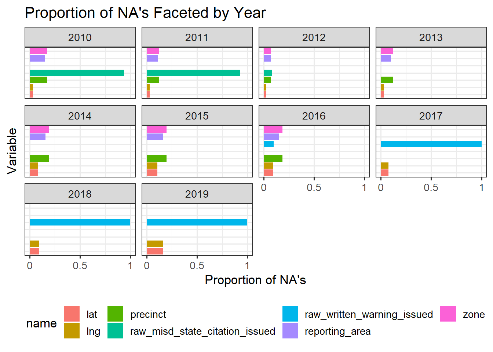

The data we are interested in originates from The Stanford Open Policing Project found here. This project aims to compile diverse information concerning police stops and crimes across multiple cities in the USA. The project is lead by a group of researchers and journalists at Stanford University and the data is requested from law enforcement agencies. Each city possesses its own CSV/Rdata file with distinct data columns, as policies may vary due to differing state or city laws. For a comprehensive description of the various column types within the datasets, this README provides an exhaustive overview of the data. Each row in the dataset represents a stop that occurred in a particular city.
We have decided to choose the dataset for Nashville (Tennessee) because it has the most comprehensive features among all of the cities while also having a significant number of stops. This will give us more flexibility for a deeper analysis and to provide well-thought-out answers to our questions.
The initial dataset has:
Rows: 3092351
Columns: 42
Data timeframe: 2010 to 2019
File size: 100 MB
File type: rds file
The table below provides a description of all columns, including their type and meaning, accompanied by an example:
Table 2.1: Columns description for Nashville (TN)
Column
Type
Description
Example
raw_row_number
numeric
Row number used to join clean data back to raw data
3092350
date
string
Date in “YYYY-MM-DD” format
2016-09-09
time
string
Time in “HH:MM:SS” format
21:57:00
location
string
Address in “Street, City, State, Zipcode”
I 40 W & CHARLOTTE AVE, NASHVILLE, TN, 37203
lat
numeric
Latitude
36.063321
lng
numeric
Longitude
-86.637409
precinct
numeric
Police precinct
2.0
reporting_area
numeric
Police reporting area
1863.0
zone
numeric
Police zone
223.0
subject_age
numeric
Age of the stopped subject
18.0
subject_race
string
Race of the stopped subject
hispanic
subject_sex
string
Sex of the stopped subject
female
officer_id_hash
string
Unique officer ID hash
e7099bc91c
type
string
Type of stop: vehicular or pedestrian
vehicular
violation
string
Specific violation of stop
vehicle equipment violation
arrest_made
bool
Indicates whether an arrest was made
False
citation_issued
bool
Indicates whether a citation was issued
False
warning_issued
bool
Indicates whether a warning was issued
False
outcome
string
Indicates whether one of these actions have been taken (arrest, citation, warning and summons)
citation
contraband_found
bool
Indicates whether a contraband was found
False
contraband_drugs
bool
Indicates whether drugs were found
False
contraband_weapons
bool
Indicates whether weapons were found
False
frisk_performed
bool
Indicates whether a frisk was performed
False
search_conducted
bool
Indicates whether a search was conducted
False
search_person
bool
Indicates whether a person was searched
False
search_vehicle
bool
Indicates whether a vehicle was searched
False
search_basis
string
Provides the reason for the search (k9, consent, plain view, probable cause, other)
consent
reason_for_stop
string
Provides the reason for the stop
moving traffic violation
vehicle_registration_state
string
Vehicle state origin (ex: TN for Tennessee)
TN
notes
string
Contains officer notes
CITED FOR NOT HAVING INSURANCE
raw_verbal_warning_issued
bool
Indicates whether a verbal warning was issued
False
raw_written_warning_issued
bool
Indicates whether a written warning was issued
False
raw_traffic_citation_issued
bool
Indicates whether a traffic citation was issued
False
raw_misd_state_citation_issued
bool
Indicates whether a misd state citation was issued
False
raw_suspect_ethnicity
string
Ethnicity of the suspect
H
raw_driver_searched
bool
Indicates whether a driver was searched
False
raw_passenger_searched
bool
Indicates whether a passenger was searched
False
raw_search_consent
bool
Indicates whether a search was consent
False
raw_search_arrest
bool
Indicates whether a search was due to an arrest
False
raw_search_warrant
bool
Indicates whether a search warrant was issued
False
raw_search_inventory
bool
Indicates whether an inventory search
False
raw_search_plain_view
bool
Indicates whether evidence was seized without a warrant
The data file has been downloaded locally and is available inside the repository as it is not too large. However, we noticed some patterns with missing values that we will touch on later. Combined with the fact that there are over three million rows spanning almost a decade, we decided to subset the data for ease of analysis and computation speed. Our subsetted data includes only data from 2012-2016.
2.2 Research Plan
Studying trends in Nashville traffic stops provides insights into the bigger picture of law enforcement and social dynamics. One can consider any of the many factors that contribute to why someone is stopped to understand policing strategy more. The type of car someone drives may be more scrutinized by an officer, and this may differ according to time of day or day of wekk. Analyzing the intersection of race, gender, and age among those stopped can shed light on potential underlying biases in policing. Through our dive on the policing patterns in Nashville, we hope to tell a more transparent story of the law enforcement system.
We plan to touch on several research areas using our data:
To what extent do spatiotemporal factors play a part in traffic stops? This includes features like geographic location and time of day.
What are the demographic patterns of those stopped? Are those of a certain gender, age, or race overrepresented in their number of traffic stops?
What do the outcomes of traffic stops look like? To answer this we will look at if the suspect was searched, if a ticket was issued, etc.
Are there patterns in the types of cars that are stopped?
2.3 Missing value analysis
Code
library(tidyverse)library(lubridate)nashville <-readRDS('Datasets/yg821jf8611_tn_nashville_2020_04_01.rds')na_rate <-data.frame("Variable"=colnames(nashville), "na_prop"=sapply(nashville, function(y) sum(length(which(is.na(y))))) /nrow(nashville)) |>arrange(na_prop)na_rate |>mutate(Variable =factor(Variable, levels = na_rate$Variable)) |>ggplot(aes(x = Variable, y = na_prop)) +geom_col() +coord_flip() +labs(y ="Proportion of NA's ") +ggtitle("Proportion of NA Values by Variable")
The majority of features have very few or zero missing values. We see that there are four columns (search_basis, contraband_weapons, contraband_found, notes) with a very high percentage of missing values (>75%). This is likely due to officers not taking records in these columns, so we will not consider these features in our analysis moving forward.
Code
nashville |>mutate(year =year(date)) |>select(year, raw_misd_state_citation_issued, raw_written_warning_issued, zone, precinct, reporting_area, lat, lng) |>group_by(year) |>summarise_each(list(na_count =~mean(is.na(.)))) |>pivot_longer(!year) |>mutate(name =sub("_na_count$", "", name)) |>ggplot(aes(x = name, y = value, fill = name)) +geom_col() +coord_flip() +labs(y ="Proportion of NA's", x ="Variable") +ggtitle("Proportion of NA's Faceted by Year")+facet_wrap(~year) +theme(axis.text.y=element_blank(),axis.ticks.y=element_blank(),legend.position="bottom") +scale_y_continuous(breaks =c(0, .5, 1),labels =c('0', '0.5', '1'))

To further analyze trends in missing values, I faceted the percent of missing values by year for a few of the variables with a medium number of missing values. We see that in 2017-2019, there is no data for raw_written_warning_issued, and from 2010-2011 the column raw_misd_state_citation_issued is mostly empty.
Since the years 2012-2016 have the cleanest data in general, we decided to subset these years for our research going forward.